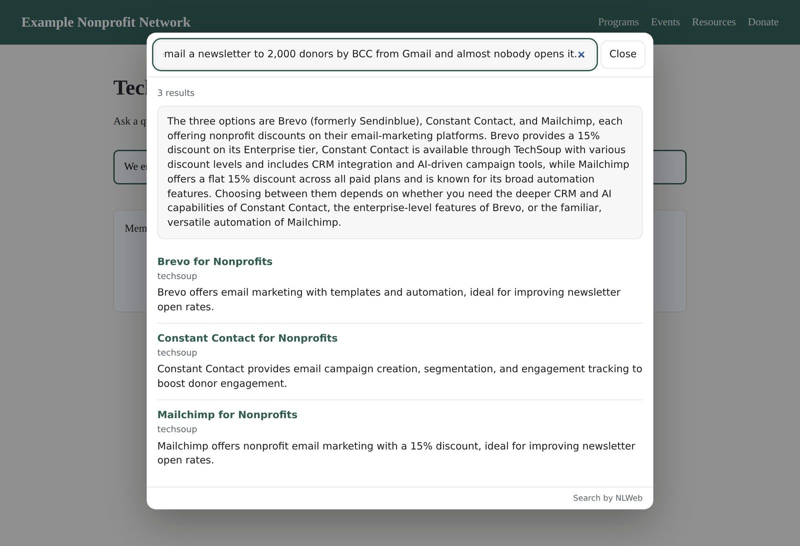

Get a key TechSoup Resource Raiser
Add TechSoup search to your website
TechSoup's natural-language search is available for syndication. Any site that serves nonprofits (a network, a funder, a capacity builder, a member association) can put a search box on its own pages that answers from TechSoup's catalog and nonprofit podcasts. Your visitors describe their situation in their own words and get the TechSoup offers, guides and episodes that fit, without leaving your site.
- Two indexes. Resources: TechSoup offers and guides, plus articles from NTEN, SSIR and others. Podcasts: episodes from about twenty nonprofit podcasts, including TechSoup's own.
- A few lines of code. No server, no database, nothing to maintain. Results open over your page, or inside it if you prefer.
- Your own key, which works only on the websites you list for it.

How to add it
You get a key, tell it which websites may use it, and paste a few lines into your page. It takes about ten minutes and needs no server of your own.
-
Get a key
Open the key page and sign in with a Google account. During the pilot only invited accounts can sign in; if Google says the app is not available to you, ask your NeuralWeb contact to add your address.
Under New key, fill in:
- Name: anything that helps you recognise it, such as Main website.
- Search backend: TechSoup Resource Raiser.
- Allowed sites: the address of every website the search box will be on, one per line (see step 2).
- Collections:
resources,podcasts, or leave it empty to allow both.
Click Create key. Your key starts with
nlw_. Under it, Embed code shows the code for step 3 with your key already filled in. -
List the websites the key may be used on
A key sits in your page's source, where anyone can see it. What stops someone else using it is this list: searches only work from pages on the sites you name. Enter only the scheme and host, with no path:
You enter It works on https://www.example.orgevery page on www.example.org https://example.orgexample.org without www. List both if visitors can reach either. https://*.example.organy subdomain, such as blog.example.org (but not example.org itself) http://localhost:8000a copy on your own computer, for testing Sites must use
https://(plainhttp://is accepted only for localhost). You can change the list later under Edit. -
Paste the code into your page
Put this where you want the search box. Replace
YOUR_KEYwith your key, or copy the ready-made version from Embed code on the key page.<input id="site-search" type="search" placeholder="Search TechSoup"> <script async src="https://nlembed-3zepccvmbq-uc.a.run.app/widget.js" data-key="YOUR_KEY" data-input="site-search" data-site="resources" data-mode="summarize"></script>Visitors type a question and press Enter; results open over your page. Escape, the Close button or a click outside closes them.
Already have a search box? Leave out the
<input>line and setdata-inputto theidof your box. If the box is inside a form, the widget takes over the form's submit so the page does not reload.Using a site builder?
- WordPress: add a Custom HTML block and paste the code. On WordPress.com this needs a plan that allows custom code.
- Squarespace: add a Code block and paste the code. JavaScript in Code blocks needs a plan that includes it.
- Builders that place custom HTML in a frame (Wix's Embed HTML, for example): results stay inside that frame's box, and the frame's own address must be in your allowed sites. Placing the code directly in the page works better.
-
Test it
Open your page from one of the allowed sites and search. If something is wrong, the reason appears where the results would be:
Message What to do this key is not allowed on https://… Add that exact address under Allowed sites. A page opened as a file from your computer shows null; serve it from localhostinstead.this key does not exist or is disabled Check the key was copied whole, and that it is not disabled on the key page. this key may not search '…' The data-sitevalue is not in the key's Collections.too many searches; slow down The key's per-minute limit was reached. Wait a minute. this key's daily quota is used up Resets at midnight UTC. the search backend is busy TechSoup's search service is at its limit. Try again shortly. If nothing happens at all, open the browser's developer console: a message such as no element matches input means
data-inputdoes not match the box'sid.
Options
Add any of these to the <script> tag.
| Attribute | Values | Default |
|---|---|---|
data-site | resources or podcasts | resources |
data-mode | summarize adds a short answer above the results; list shows results only | list |
data-display | overlay or inline (results inside your page; also set data-target) | overlay |
data-target | the id of an empty element to hold inline results | — |
data-max-results | 1 to 20 | 10 |
data-link-target | _blank opens results in a new tab | same tab |
data-theme | auto (follows the visitor's setting), light, dark | auto |
data-accent | a colour for links, such as #0b6e4f | blue |
data-conversation | false treats every question on its own. Otherwise a question asked in the open overlay is read as a follow-up to the earlier ones. | on |
Results inside the page instead of over it
<input id="site-search" type="search" placeholder="Search TechSoup">
<div id="search-results"></div>
<script async src="https://nlembed-3zepccvmbq-uc.a.run.app/widget.js"
data-key="YOUR_KEY" data-input="site-search"
data-display="inline" data-target="search-results"></script>
Resources and Podcasts tabs, like this page
Load the script without data- attributes and set it up from
your own script. Changing widget.site changes what the next search covers.
<button type="button" onclick="setScope('resources')">Resources</button>
<button type="button" onclick="setScope('podcasts')">Podcasts</button>
<input id="site-search" type="search" placeholder="Search TechSoup">
<script>
window.NLWebSearchQueue = [{
key: "YOUR_KEY", input: "site-search", site: "resources", mode: "summarize"
}];
function setScope(scope) {
const widget = window.NLWebSearch && window.NLWebSearch.instances[0];
if (widget) widget.site = scope;
}
</script>
<script async src="https://nlembed-3zepccvmbq-uc.a.run.app/widget.js"></script>
Limits and privacy
- Each key allows 60 searches a minute and 5,000 a day. During the pilot all sites also share TechSoup's own search capacity, so busy moments can be slower.
- The widget sets no cookies and stores nothing in the visitor's browser.
- A visitor's question, and their earlier questions in the same open overlay, are sent to NeuralWeb and TechSoup's search service to find results.
- The search box and results are drawn separately from your page, so your site's styles do not change them and they do not change your site.